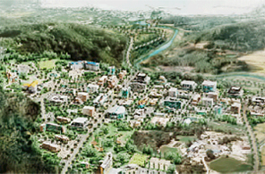
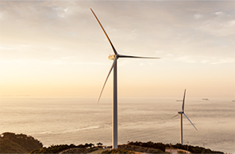
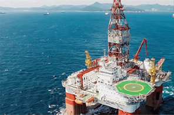

未来戦略産業・新成長産業
- Home
- 戦略産業
- 未来戦略産業・新成長産業
概要
釜山は、持続可能な未来を創るための新たな成長エンジンとして融・複合産業の競争力強化を図っています。IT、造船・海洋、バイオ、ロボット、グリーン・エネルギー産業など、未来戦略産業の分野で様々なプロジェクトを進めています。
-

東南圏放射線医・科学産業団地の造成
-

海上風力団地の造成
-

世界トップレベルの掘削船
育成産業
IT産業の国際競争力強化
クラウド/モノのインターネット産業の育成
- クラウドデータセンター試験団地の造成(美音地区)及び流通基盤構築(2014年～2018年) - BS金融グループ統合電算センターの建設(2棟、1,902億ウォン)、着工 (2015年8月)
- クラウドクラスター指定(2015年)：美音(プラットフォーム)、ソクテ～センタム(サービス地区)
- 先端モノのインターネット実証団地の造成(2015年～2017年)：モノのインターネットテストベッド構築(2015年)
- ポストITU事業：ITU大学の誘致、ITUユースセンターの設置
釜山の成長エンジン、造船・海洋事業の特化
造船・海洋プラント産業の育成
- 海洋ICT融合ビジネスベルトの造成(2016年～2020年)
- IoT(モノのインターネット)融合産業育成基盤の構築
- 深海海洋工学水槽の構築、海洋プラント高度技術研究基盤の構築、海洋プラント資機材R&Dセンターの構築、造船資機材性能高度化基盤の構築、海洋プラントエンジニ
- アリングクラスター構築の推進、造船・海洋プラントグローバル核心センター
- 海洋プラント専門人材の育成、海洋プラント従事者の安全教育など
- 釜山港新港背後団地66万㎡の造成及び関連企業の誘致(2014年～2017年)、海洋プラント資機材及びモジュールの製造、資機材の流通など
釜山湾の戦略事業による雇用創出
IT融・複合産業基盤の構築
- 先端IT融合産業集積団地の造成(2011年～2015年)
- ETRI(韓国電子通信研究院)釜山分院の設立承認(2015年7月)
放射線医・科学産業の育成
- 放射線医・科学産業団地の造成(2010年～2015年)、医療用重粒子加速器の開発(2010年～2017年)：治療センター完工(2015年11月)
- 輸出用新型研究炉の建設(2010年～2018年)：敷地造成工事完了(2015年4月)、放射性同位元素融合研究基盤の構築(2015年～2019年)
- 原子力施設解体技術総合研究センターの設立(2016年～2019年)
- がん専門研究センター、臨床試験グローバル先導センターなどの医療産業支援
- アンチエイジング産業のインフラ構築及び製品開発の支援
履物・繊維産業の育成
- 高機能性、科学的検証・信頼の確保による釜山履物産業のグローバル化・高度化に向けた育成
- 海洋融・複合素材産業化事業の推進などによるグローバル市場の先取り
ロボット産業及びグリーン・エネルギー産業の育成
- 海洋ロボット研究拠点センターの構築(2011年～2016年)
- 地域産業と連携した課題企画などのロボット融合エコ環境づくり(2015年)
- 再生可能エネルギー地域支援事業(18ヶ所)、海上風力団地の造成(2013年～2017年)
- バイオコージェネレーションプラントの建設(2015年～2017年)